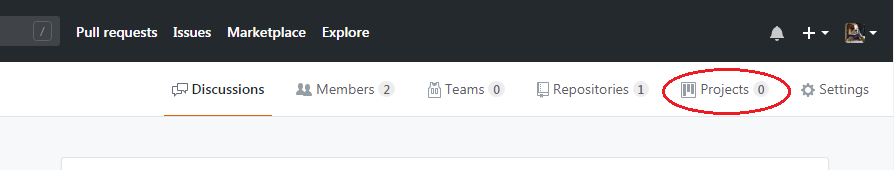

The tasks in this module will be ongoing throughout the semester, culminating in the delivery of a final software product. All stages of the development process will be documented in a final written formal report. Following is your to-do/to-know list for this module
From your team repository, create a Project. Then create a "project board" for your software project.
| Team | HTML/CSS | JS | PHP | Python | django | SQL | C# | Unity2018 |
|---|---|---|---|---|---|---|---|---|
| FW, NH | x | x | ||||||
| HT, AC | x | x | x | |||||
| AZ, YP, S | x | x | x | x | x | |||
| K, A, M | ||||||||
| MW, MS, JC | x | x | x | x | x | x | ||
| T, T, R, V | x | x |
Report: TBD at the latest. No exceptions.
Presentation days: TBD
Presenters will be selected randomly on TBD, so every group must be prepared to present. Attendance on all three days is mandatory, as this is a summative assessment
Practical Coding Exam: TBD
Formal Written Exam: TBD
This work and other materials under
github.com/ICS4U-ICS4C,
are licensed under Creative Commons Attribution 4.0 Int'l License.